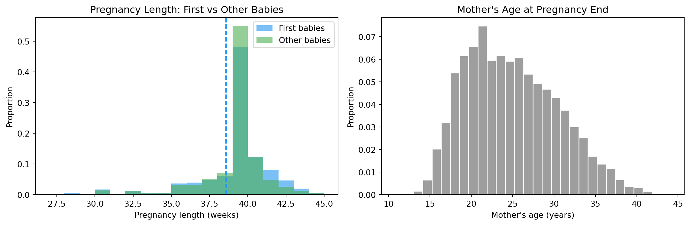

In probability, you knew the distribution and asked: what data would it produce?
In statistics, you have the data and ask: what distribution produced it?
This reversal is the entire subject. You already understand random variables, Bernoulli trials, and what a distribution means. Now we point that knowledge at real data and ask hard questions.
14.2 The Question
“Everyone knows first babies are born late.”
You’ve heard this. Your parents believe it. It gets repeated at baby showers. But is it actually true? And how would you know?
This is the central question of Chapter 1 — and of statistics itself. The goal is not to trust intuition. The goal is to replace anecdote with evidence.
14.3 A Statistical Approach
The trap most people fall into: they remember the cases that confirm their belief and forget the ones that don’t. This is called confirmation bias, and it’s built into human cognition.
Statistics gives us a way out:
Find data collected independently of our belief
Define the question precisely (what does “late” mean?)
Compute something measurable
Decide if the difference is real or just noise
Step 4 is what most of this course is about. But first, we need data.
14.4 The Dataset — NSFG
The National Survey of Family Growth is a US government survey conducted by the CDC. The 2002 cycle interviewed 7,643 women aged 15–44 about their pregnancies, births, and health. It is designed to be representative of the US population.
Why this dataset?
Large enough to detect small effects
Collected by professionals with no agenda about first babies
Contains exactly the variables we need: pregnancy length, birth order, birth weight
Mother’s age at pregnancy end (in centiyears — see below)
totalwgt_lb
Birth weight in pounds
finalwgt
Survey weight (how many women this respondent represents)
NoteWhere the data comes from
The raw .dat.gz and .dct files in data/ were downloaded once from Allen Downey’s Think Stats repository (which mirrors the CDC release). The download script is preserved as data/download_nsfg.py for reproducibility.
14.5 Loading the Data — From Scratch
The NSFG data comes in a fixed-width format (.dat.gz) described by a Stata dictionary file (.dct). We parse it from scratch — no helper libraries — so you see exactly what’s happening.
The .dct file has lines that look like:
_column(1) str12 caseid %12s "RESPONDENT ID NUMBER"
_column(13) byte pregordr %2f "PREGNANCY ORDER (NUMBER)"
Each line tells us a column’s start position (1-indexed), Stata type, name, the number of bytes it occupies (%12s, %2f), and a label. The trailing letter — s or f — separates strings from numerics.
import reimport osimport gzipimport numpy as npimport pandas as pdimport matplotlib.pyplot as plt# Consistent palette across all statistics chaptersCOLORS = {"first": "#2196F3", # blue — first babies"other": "#4CAF50", # green — other babies"highlight": "#F44336", # red — differences, annotations"neutral": "#9E9E9E", # grey — background elements}def parse_dct(dct_path: str) ->list[dict]:"""Read a Stata .dct file and return column specs as a list of dicts. Each line we care about looks like _column(START) TYPE NAME %WIDTH(s|f) "label" where START is 1-indexed and WIDTH is the column's byte width. """ columns = [] pattern = re.compile(r"_column\((\d+)\)\s+(\w+)\s+(\w+)\s+%(\d+)([a-z])" )withopen(dct_path) as f:for line in f: match = pattern.search(line)if match: start, type_word, name, width, fmt = match.groups() start_idx =int(start) -1# 0-indexed end_idx = start_idx +int(width) # exclusive dtype ="str"if fmt =="s"else type_word columns.append({"name": name,"start": start_idx,"end": end_idx,"dtype": dtype, })return columnsdef load_fixed_width(dat_path: str, columns: list[dict]) -> pd.DataFrame:"""Parse a gzipped fixed-width file using column specs from parse_dct.""" records = [] opener = gzip.openif dat_path.endswith(".gz") elseopenwith opener(dat_path, "rt") as f:for line in f: record = {}for col in columns: raw = line[col["start"]:col["end"]].strip()if raw =="": record[col["name"]] = np.nanelif col["dtype"].startswith("str"): record[col["name"]] = rawelse:try: record[col["name"]] =float(raw)exceptValueError: record[col["name"]] = np.nan records.append(record)return pd.DataFrame(records)data_dir ="data"dct_path = os.path.join(data_dir, "2002FemPreg.dct")dat_path = os.path.join(data_dir, "2002FemPreg.dat.gz")columns = parse_dct(dct_path)df = load_fixed_width(dat_path, columns)print(f"Loaded: {df.shape[0]} rows × {df.shape[1]} columns")
Loaded: 13593 rows × 243 columns
Five thousand columns of survey data. We only need a handful.
14.6 Transformation
Raw NSFG data needs cleaning before it is usable.
14.6.1 Age in centiyears
agepreg is stored as age × 100 (e.g., 2550 means 25.5 years). We divide by 100 to get years.
14.6.2 Birth weight as pounds + ounces
birthwgt_lb and birthwgt_oz are recorded as two separate integer columns. We combine them into a single float totalwgt_lb.
Key variable ranges after transformation:
agepreg : 10.3 – 44.1 years
prglngth : -0 – 50 weeks
14.7 Filter to live births
outcome == 1 means live birth. Everything else (induced abortion, stillbirth, miscarriage, etc.) is a different question and we exclude it when studying birth weight and pregnancy length.
live = df[df["outcome"] ==1].copy()print(f"Live births: {len(live):,} of {len(df):,} total pregnancies "f"({len(live)/len(df)*100:.1f}%)")
Live births: 9,148 of 13,593 total pregnancies (67.3%)
14.8 Validation — never skip this step
Before trusting any analysis, check the data against known published statistics. From the NSFG codebook:
Total pregnancies: 13,593
Live births: 9,148
Mean pregnancy length (live births): ~38.6 weeks
If our numbers don’t match, something went wrong in loading or filtering.
print(f" Total pregnancies : {len(df):,} (expected ~13,593)")print(f" Live births : {len(live):,} (expected ~9,148)")print(f" Mean prglngth : {live['prglngth'].mean():.3f} weeks (expected ~38.6)")
Total pregnancies : 13,593 (expected ~13,593)
Live births : 9,148 (expected ~9,148)
Mean prglngth : 38.561 weeks (expected ~38.6)
WarningValidation is not optional
Every published bug in a statistical analysis we know of would have been caught by a check against a known number at this stage. Spend the five minutes.
14.9 Split by birth order
first = live[live["birthord"] ==1]other = live[live["birthord"] >1]print(f" First babies : {len(first):,}")print(f" Other babies : {len(other):,}")
There is a difference. First babies are born slightly later — about 13 hours on average.
But 13 hours — is that “late”? Is it real? Could it be random noise?
These are the questions the next 13 chapters are built to answer.
14.11 Visual first look
fig, axes = plt.subplots(1, 2, figsize=(12, 4))# Pregnancy length: first vs otherax = axes[0]bins =range(27, 46)ax.hist(first["prglngth"], bins=bins, alpha=0.6, color=COLORS["first"], label="First babies", density=True)ax.hist(other["prglngth"], bins=bins, alpha=0.6, color=COLORS["other"], label="Other babies", density=True)ax.axvline(mean_first, color=COLORS["first"], linestyle="--", linewidth=1.5)ax.axvline(mean_other, color=COLORS["other"], linestyle="--", linewidth=1.5)ax.set_xlabel("Pregnancy length (weeks)")ax.set_ylabel("Proportion")ax.set_title("Pregnancy Length: First vs Other Babies")ax.legend()# Mother's ageax = axes[1]ax.hist(live["agepreg"].dropna(), bins=30, color=COLORS["neutral"], edgecolor="white", density=True)ax.set_xlabel("Mother's age (years)")ax.set_ylabel("Proportion")ax.set_title("Mother's Age at Pregnancy End")plt.tight_layout()plt.show()

Pregnancy length and mother’s age — the raw shapes.
The pregnancy-length histograms look almost identical. The dashed lines (the means) are close together. The 13-hour gap is buried inside the much larger spread of normal pregnancy variation.
That’s the punchline of this chapter.
14.12 Interpretation
The key lesson: a difference in means is just the beginning.
We need to ask:
How large is the difference relative to the variability? (Chapter 2)
Could this happen by chance? (Chapter 9)
Is it practically meaningful? (Chapter 2 — effect size)
The honest answer to “are first babies born late?” turns out to be: yes, slightly, but the effect is much smaller than people believe.
Statistics doesn’t always destroy folk wisdom. Sometimes it confirms it. But it always puts a number on it — and the number usually surprises everyone.
14.13 Exercises
Load the NSFG data and print the shape of the DataFrame.
How many live births are in the dataset?
What is the mean birth weight for first babies vs others?
What fraction of all pregnancies result in live births?
Plot a histogram of agepreg for the full dataset. What shape do you see? (We’ll learn its name in Chapter 2.)
14.14 Glossary
anecdotal evidence — a single story or personal experience used to support a general claim.
confirmation bias — the tendency to notice and remember cases that confirm your beliefs.
DataFrame — a 2D table in pandas with named columns and an index.
outcome variable — in NSFG, the coded result of a pregnancy (live birth, abortion, etc.).
survey weight — a number that accounts for the fact that some groups were oversampled.
centiyear — one hundredth of a year; used in NSFG to store ages as integers.
validation — checking computed results against independently known values to catch errors.